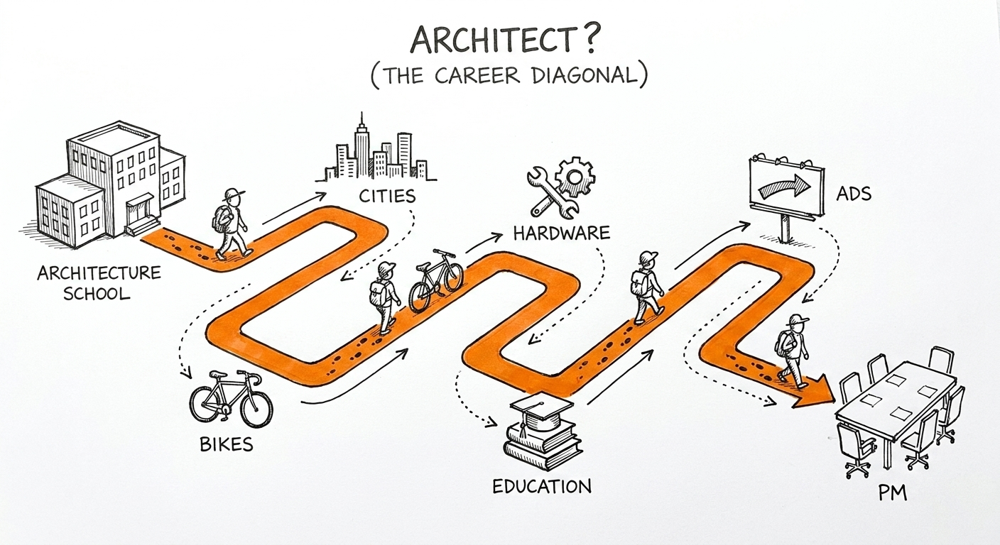
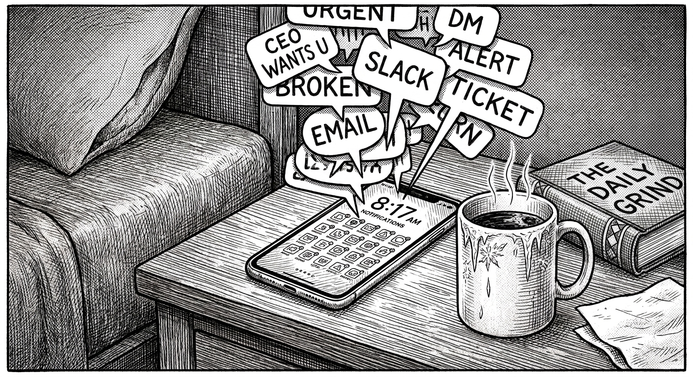
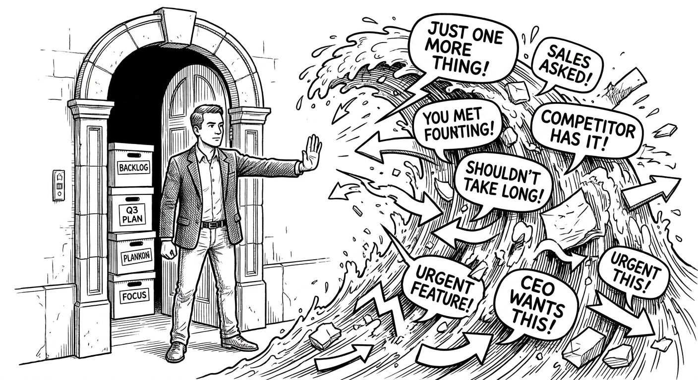
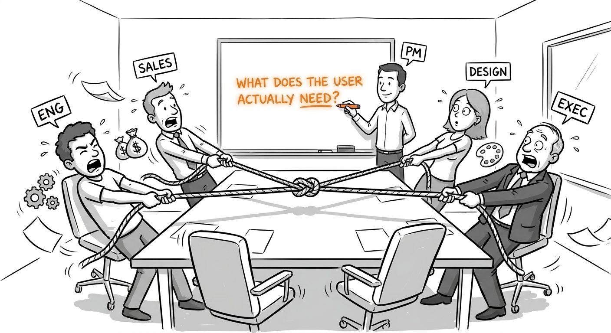
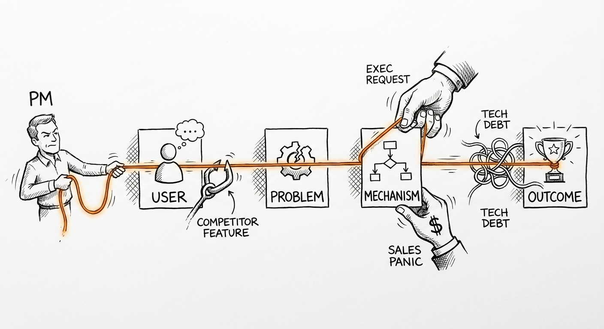
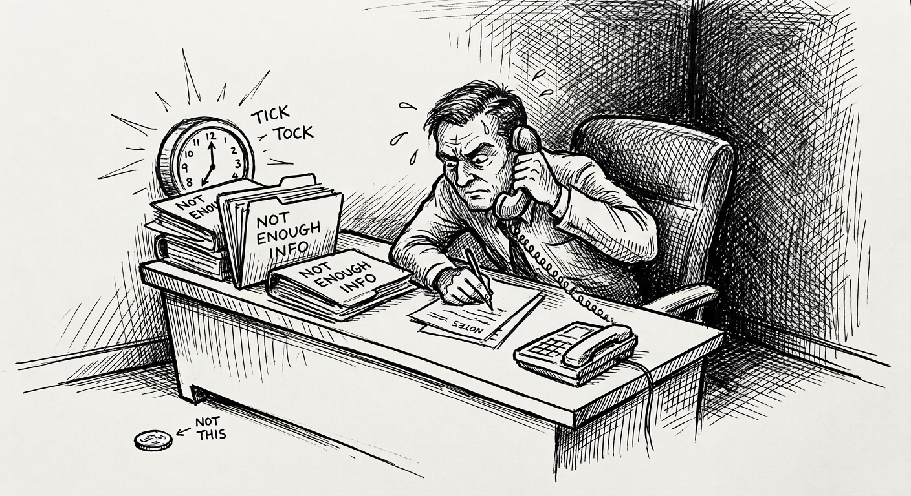

Capítulo 6. ¿Te va a gustar este trabajo?

Architect? no preguntaba si eras lo bastante inteligente. Preguntaba si te gustaba lo que los arquitectos hacen todo el día. La respuesta no está en el portafolio — está en si disfrutas pararte bajo la lluvia a discutir la especificación de una viga con un contratista que lleva treinta años haciéndolo. Si esa discusión — ganarla, perderla, encontrar el punto medio — te da energía o te la quita.
Estudié arquitectura y urbanismo — no como trampolín, sino por un interés genuino en cómo las ciudades funcionan y les fallan a quienes las habitan. Eso me llevó a dirigir laboratorios de desarrollo de producto en la Universidad de Drexel, a diseñar productos para el entorno construido, a escribir sobre cómo el transporte y la televisión moldean la cultura urbana. Con el tiempo me llevó a las bicicletas: específicamente a Social Bicycles en Nueva York, una de las primeras empresas en poner candados inteligentes con GPS en sistemas urbanos de bicicletas compartidas. Desde ahí el camino se ramificó y volvió sobre sí mismo. Trabajé de forma paralela para empresas tan distintas como un competidor de Uber en India y una startup de publicidad con IA, antes de moverme a Udacity, luego a Google, luego a Meta. El arco de lo académico a lo cívico a la startup temprana a la scale-up a una Fortune 10 tomó unos veinte años, varias industrias y más de un país. No lo planeé. Seguí la pregunta en cada bifurcación — la misma que hacía aquel libro: no si estaba técnicamente calificado para lo siguiente, sino si me iba a gustar lo que lo siguiente exigía en el día a día.
Aquí, la misma pregunta. Con una lluvia ligeramente distinta.
He corrido versiones de estos ejercicios con más de cien personas explorando roles de PM — y he tenido las conversaciones de carrera con cientos más que estaban decidiendo si entrar a PM, quedarse o irse a algo que les quedara mejor. Los ejercicios no son teóricos. Salieron de observar qué separaba realmente a la gente que encontraba el trabajo energizante de la que lo encontraba desgastante, incluso cuando ambos grupos eran técnicamente competentes. La diferencia casi nunca fue de capacidad. Fue de encaje.
Ya viste el trabajo descrito desde afuera: las tres preguntas, las cualidades, los modelos mentales, el mapa de pares, las herramientas. Ahora dejamos de describir. Probamos.
Este capítulo son seis ejercicios. Cada uno simula una experiencia real de PM. Hazlos — no como hipotéticos, sino como tareas reales que de verdad haces. Lo que sientes durante y después de cada uno es el dato. No el resultado. El sentimiento.
No hay puntaje. «Odié esto» es tan útil como «no podía parar». Ambas son honestas. Ambas te dicen algo que la descripción del puesto no.
Una nota sobre lo que estos ejercicios no son: no son práctica de entrevistas de caso. Una entrevista de caso te pide actuar el pensamiento de PM para una audiencia que evaluará tu framework. Estos ejercicios te piden hacer el pensamiento de PM para ti mismo y notar cómo se siente la experiencia. La diferencia importa muchísimo. Mucha gente que entrevista bien odia el trabajo. Mucha gente a la que las entrevistas de PM le resultan torpes amaría el trabajo real. La actuación y la experiencia son cosas distintas.
6.1 Ejercicio 1: La bandeja de entrada
El escenario:
Es lunes, 8:17 de la mañana. Abres Slack. Esto es lo que te espera:
[Slack, 11:43 pm del domingo] De: Raj (CEO) — «Acabo de ver el anuncio de la nueva funcionalidad de IA de Notion. Necesitamos una respuesta. ¿Puedes armar algo para mañana al final del día? No tiene que ser largo». Enlazó el artículo de TechCrunch.
[Slack, 7:52 am del lunes] De: Daniela (lead de ingeniería) — «Oye, aviso rápido — el documento de sprint planning tiene un conflicto. El trabajo del flujo de onboarding y el refactor de búsqueda necesitan la librería de componentes compartida al mismo tiempo. Ingeniería dice que hay que elegir uno. Necesito tu decisión antes del standup de las 10».
[Slack, 8:04 am del lunes] De: Marcus (Customer Success) — «Marco esto como urgente: el cliente enterprise Meridian Health pregunta por qué sus reportes exportados no incluyen los nuevos filtros de fecha. Presentan a su consejo el jueves. Nuestro CSM cree que van a escalar si no tenemos una respuesta hoy».
[Correo, recibido 7:58 am] De: Priya (VP de Marketing) — «Pedido rápido — ¿podemos hacer un sync de 30 minutos esta semana para alinear el mensaje del Q3 para el lanzamiento? Mi equipo empieza a escribir los textos el miércoles y quiere el input de PM primero».
[Notificación de Jira, 6:14 am] — Tres tickets pasaron a «bloqueado» durante la noche. Uno tiene un comentario: «esperando la firma del PM sobre la decisión del modelo de datos que discutimos el jueves pasado».
[Slack, 8:11 am] De: tu manager — «¿Tienes 15 minutos antes del standup? Quiero ponerte al tanto de unas conversaciones de reorganización».

Tu primera reunión es el standup de las 10:00. Tienes 103 minutos.
Haz esto: Escribe, ahora mismo, qué haces primero. No lo que un PM «debería» hacer. Lo que tú harías de verdad, en qué orden y por qué. Date un presupuesto real de tiempo: 103 minutos repartidos entre estos pendientes.
Luego escribe cómo te sientes con las cosas que despriorizas. No si estás tomando la decisión correcta — cómo se siente dejarlas sin resolver mientras te enfocas en otra cosa.
Lo que realmente estás probando: Tu tolerancia a la fila de demandas en competencia que se rellena constantemente. La bandeja de entrada es todas las mañanas. No se simplifica con la experiencia. Los pendientes suben de apuestas — el mensaje del CEO involucra más, la escalación viene de un cliente más grande — pero la estructura es la misma. Siempre hay algo esperando. Siempre hay algo más urgente de lo que planeaste.
Un ejemplo resuelto: Un PM con buen instinto de bandeja lee primero el mensaje de Daniela, no porque sea el más urgente en abstracto, sino porque tiene una fecha límite dura (standup a las 10) y un efecto irreversible aguas abajo (el sprint planning fija las próximas dos semanas del equipo). Manda una respuesta rápida: «Buenos días — hablemos a las 9:45 antes del standup. Me inclino por el flujo de onboarding pero quiero escuchar la restricción completa primero». Luego lee la escalación de Meridian Health y le escribe a Marcus: «Sobre esto — ¿sabes si el asunto del filtro de fechas es un bug o una limitación conocida? Si es un bug lo escalo a ingeniería ahora mismo. Si es una brecha conocida, te redacto una respuesta que puedas mandar». Después mira los tickets de Jira del modelo de datos. Esto toma doce minutos. El análisis competitivo del CEO y la conversación de reorganización con su manager quedan diferidos — no porque no importen, sino porque no tienen fecha límite dura antes de las 10, y una respuesta apurada a cualquiera de los dos es peor que una pensada más tarde.
Qué notar de ti:
- ¿El triage te dio energía — como si ordenar las prioridades fuera un acertijo que querías resolver?
- ¿Sentiste ansiedad por las cosas que dejaste sin resolver?
- ¿Te descubriste queriendo atender todo antes de empezar cualquier cosa?
- ¿Notaste un instinto claro de qué importaba más, o los seis pendientes se sintieron igual de urgentes?
Los PMs que prosperan en este trabajo suelen tener un instinto de triage claro. No es infalible, pero es rápido. Leen la bandeja y en cinco minutos saben en qué orden atacar. Ese instinto se desarrolla con la experiencia, pero empieza como una disposición. Si la bandeja produjo pavor en vez de claridad, ese es un dato importante.
En años de acompañar entradas y transiciones a PM, el ejercicio de la bandeja clasifica de forma más confiable que casi cualquier otro. He visto a gente intelectualmente aguda y genuinamente motivada sentarse ante este escenario y sentir pavor inmediato — no por la dificultad, sino por la estructura. La fila que se rellena, las urgencias en competencia, la cosa que siempre quedará sin resolver al final del día. Ese pavor es información, no una falla. También he visto a gente que supuestamente «todavía estaba explorando» el rol y que se encendió de inmediato — ya pensando el triage antes de terminar de leer. Esas dos reacciones predicen más que cualquier respuesta de entrevista que haya visto.
Preguntas de reflexión:
- ¿Qué despriorizaste primero, y fue la decisión correcta?
- ¿Cuánto tiempo sueles pasar decidiendo qué hacer versus haciéndolo?
- ¿Qué tendría que ser cierto para que la escalación de Meridian Health fuera tu primera prioridad?
- ¿Cómo se sintió diferir la conversación de reorganización con tu manager?
6.2 Ejercicio 2: El no

El escenario:
El vendedor más grande de tu empresa — el que cierra el sesenta por ciento de los tratos enterprise — lleva tres meses empujando una funcionalidad específica. La funcionalidad les daría a los administradores enterprise la capacidad de exportar logs de uso crudos en un formato CSV personalizado que sus equipos de TI puedan ingerir directamente. Entiendes por qué la quiere: quita un punto de fricción de la conversación de compras y puede cerrar tratos más rápido.
Ya hiciste el análisis. La funcionalidad tomaría dos semanas de tiempo de ingeniería. Te quedan ocho semanas del trimestre. Las dos semanas saldrían de las mejoras de onboarding que venías planeando, que según tus datos afectan la tasa de retención a treinta días de todos los tiers, incluido enterprise. Crees que el trabajo de retención se compone más que la funcionalidad de exportación, pero no puedes probarlo de forma definitiva porque no tienes datos de largo plazo sobre qué haría la mejora de retención con los ingresos de expansión enterprise.
El manager del vendedor escaló. El VP de Ventas se lo mencionó a tu VP en el sync de liderazgo de la semana pasada. No te están pidiendo construirla — todavía. Pero la presión está creciendo.
Haz esto: Escribe el documento que hace el caso para no construirla este trimestre. Una página. Estos componentes:
- Qué se está pidiendo, descrito con justicia — no una versión de paja del pedido.
- Por qué el vendedor y los clientes enterprise lo quieren legítimamente (su motivación real, no tu interpretación de su mal juicio).
- Por qué este trimestre es el momento equivocado — no en general, sino específicamente, dados estos recursos y estas alternativas.
- Qué ofrecerías en su lugar: un cronograma, un workaround, un compromiso de revisitarlo con criterios específicos.
Luego considera: ¿de verdad mandarías este documento? Si no, ¿por qué no — y qué te dice eso?
Lo que realmente estás probando: Tu relación con decir que no bajo presión organizacional. Escribir el argumento es la parte fácil. La parte difícil es la conversación que sigue, cuando el VP de Ventas está en la sala y tu VP te mira y te pide defender la decisión. Los PMs escriben más noes que síes. La capacidad de sostener una posición razonada — no con terquedad, sino con confianza y apertura genuina a nueva información — es una de las habilidades de PM más importantes y menos enseñadas.
Acompañando a gente hacia roles de PM, la brecha entre escribir el no y entregarlo es donde viven la mayoría de las dificultades. Casi todos los que hacen el trabajo pueden construir el argumento — «la retención se compone más que esta funcionalidad de exportación» no es difícil de ver. La prueba es qué pasa cuando el VP de Ventas está en la sala y tu VP te está mirando y la presión es real. He visto a gente confiada y articulada en cada conversación de coaching doblarse la primera vez que llegó la presión organizacional. Y he visto a gente que parecía dubitativa en la práctica volverse notablemente firme cuando las apuestas reales estuvieron sobre la mesa. El argumento escrito es el entrenamiento. La sala es el examen.
Un ejemplo resuelto: Un buen documento de «no» empieza con un reconocimiento genuino. «El pedido es razonable. Los administradores enterprise tienen un problema real de flujo de trabajo — están descargando PDFs y reformateándolos a mano para sus herramientas internas de BI. El vendedor tiene razón en que esto crea fricción en conversaciones de compras con compradores intensivos en TI». Luego hace el caso con precisión. «Construir esto en el Q3 significa diferir el trabajo del flujo de activación. Nuestra retención a treinta días para las cohortes que completan el nuevo onboarding es 18% más alta que para las que no. Tenemos 4,000 usuarios al mes en el funnel afectado. Si asumimos que el lift de retención continúa a las tasas actuales, el valor compuesto de llegar a esa mejora ahora supera el costo de dos semanas de fricción en tratos — sobre todo porque tenemos tres datos de tratos enterprise cerrando sin la funcionalidad de exportación». Luego ofrece algo real. «Quiero comprometerme a construir esto en el Q4 si la mejora de activación se sostiene hasta septiembre. Y voy a hablar con el vendedor sobre cómo podría verse el workaround interino».
Qué notar de ti:
- ¿Disfrutaste construir el argumento — la precisión de armar el caso?
- ¿Suavizaste el no hasta un «quizá» antes de terminar el documento?
- ¿Sentiste el impulso de agregar salvedades que hicieran tu posición más cómoda de sostener?
- ¿Cómo se sintió imaginar al VP de Ventas leyendo esto?
Preguntas de reflexión:
- ¿Qué información adicional cambiaría tu respuesta?
- ¿Cuál es la parte más débil del argumento que escribiste?
- ¿Cómo lo manejarías si el VP de Ventas revirtiera tu decisión? ¿Qué harías después?
- ¿Tu «no» es en realidad un «todavía no»? ¿Qué tendría que ser cierto para que se volviera un sí?
6.3 Ejercicio 3: La sala

El escenario:
Estás en una revisión de diseño. La reunión tiene ocho personas: tú, tres ingenieros, dos diseñadores, un analista de datos y un lead de QA. Están revisando los mocks finales de una nueva experiencia de búsqueda que lleva dos meses en desarrollo.
El diseño es bueno. Los ingenieros asienten. Pero a los veinte minutos notas algo: la experiencia de búsqueda está diseñada para el comportamiento que querías que los usuarios tuvieran, no para el que tienen. Tu investigación mostró que el sesenta por ciento de los usuarios busca con una o dos palabras, nunca frases completas. El diseño optimiza para búsquedas de consulta larga — muestra sugerencias de consulta, tips de reformulación, operadores booleanos. Nada de eso ayuda a la mayoría de una-o-dos-palabras.
Llevas cinco minutos sentado sobre esta observación. La reunión va camino a la aprobación. Nadie más lo está planteando. Los diseñadores trabajaron duro en esto. Los ingenieros ya están estimando mentalmente la construcción. Tu manager no está en la sala.
Haz esto: En tu próxima reunión donde tengas una observación que interrumpiría la dirección hacia la que se mueve la sala — dila. Nombra lo que ves. No para provocar. Porque el equipo necesita que alguien lo nombre antes de gastar cuatro semanas construyendo lo equivocado.
Después de la reunión, escribe: ¿Qué dijiste? ¿Cómo cayó? Y: ¿cómo te sentiste en los diez segundos antes de decirlo?
Si no encuentras una reunión esta semana, escribe qué habrías dicho en el escenario de arriba — e imagina decirlo en voz alta. ¿Qué te detiene?
Lo que realmente estás probando: Navegar el conflicto no se trata de que te guste la confrontación. Se trata de tolerar la incomodidad de nombrar la cosa real cuando es más fácil dejar que la reunión termine con la ambigüedad intacta. La incomodidad es real. Los diseñadores sí trabajaron duro. Los ingenieros están listos para construir. Interrumpir ese impulso se siente costoso, incluso cuando ahorra semanas de retrabajo.
En Meta, un principio cultural ayuda a reencuadrarlo: la jerarquía declarada es Meta, Metamates, Me — primero la empresa, luego los colegas, luego tú. El PM que se queda callado está priorizando su propia comodidad por encima de compañeros que van a pasar tres semanas construyendo lo equivocado, y de la empresa que paga el retrabajo. Nombrado así, el cálculo cambia. Plantear la observación no es confrontativo — es lo que hace un buen metamate.
El trabajo del PM en una sala así es notar y nombrar. «Quiero señalar algo antes de pasar a los próximos pasos. El diseño es fuerte, pero me preocupa que esté optimizando para un comportamiento de usuario que nuestra investigación sugiere que es un patrón minoritario. El sesenta por ciento de nuestras búsquedas son de una o dos palabras. ¿Podemos dedicar diez minutos a estresar el diseño contra ese caso de uso antes de comprometernos?». Esa es la frase. No es una acusación. No es un veto. Es una observación que el equipo necesita antes de fijar el rumbo.
Un ejemplo resuelto de no decirlo: La reunión termina. Todos se van pensando que el diseño quedó aprobado. Los ingenieros construyen durante tres semanas. QA corre las pruebas. La experiencia de búsqueda funciona perfecto para los power users y para nadie más. Alguien corre los datos de consultas de búsqueda y nota el desajuste. Hay un post-mortem. Nadie recuerda quién sabía qué ni cuándo. Las tres semanas no se recuperan.
Qué notar de ti:
- ¿Decirlo se sintió como un alivio — un peso que se levanta — o se sintió costoso?
- Si no lo dijiste: ¿qué te detuvo, específicamente? ¿Miedo a la reacción? ¿Incertidumbre sobre si tenías razón? ¿No saber cómo encuadrarlo?
- ¿Los diez segundos previos se sintieron energizantes (un acertijo por resolver) o drenantes (un riesgo social por administrar)?
Preguntas de reflexión:
- ¿Cuál es el peor resultado realista de nombrarlo?
- ¿Cuál es el peor resultado realista de no nombrarlo?
- ¿Hay una versión menos confrontativa, más curiosa — que igual meta la observación a la sala?
- ¿Qué tan seguido, en el último mes, saliste de una reunión sabiendo que algo importante no se dijo?
6.4 Ejercicio 4: La historia

El escenario:
Explícale tu proyecto actual — o el más reciente, o el trabajo de PM que hayas hecho en una clase o proyecto personal — a alguien fuera de tu campo. Un familiar. Una amiga que trabaja en una industria completamente distinta. Alguien sin obligación de que le importe y sin razón profesional para asentir por cortesía.
Dos minutos. En voz alta. No por escrito.
Restricciones:
- Nada de jerga. Nada de «estamos construyendo una plataforma». Nada de «estamos optimizando el funnel». Nada de «AI-native».
- Explica el problema antes que la solución.
- Explica quién tiene el problema antes que el problema.
- No más de un número. (¿Cuál número elegirías?)
Cuando termines, anota: ¿Te hicieron una pregunta de seguimiento? ¿Cuál fue? ¿O cambiaron de tema?
Lo que realmente estás probando: La gravedad narrativa. La cualidad del capítulo 2 que más determina si un equipo te va a seguir a través de la incertidumbre. La IA te da palabras ilimitadas. No puede darte la claridad que produce convicción, y no puede darte el conocimiento específico de tu usuario — su vida real, su frustración real — que hace que una historia se sienta verdadera y no construida.
La explicación oral de dos minutos es más difícil de lo que parece porque fuerza la precisión. No puedes esconderte en un deck. No puedes apoyarte en una gráfica. Tienes que conocer al usuario lo suficiente para explicárselo a un extraño, y tienes que creer que el problema importa lo suficiente como para que la explicación cargue algo de calor.
Por qué importa para los PMs: La explicación oral no es un truco de fiesta. Es la prueba de si encontraste la historia que va a mantener unido a un equipo cuando los datos sean ambiguos o el roadmap esté en disputa. Los equipos no siguen documentos. Siguen la historia que pueden recontar a las 11 de la noche cuando algo se rompe. Si no puedes explicarle tu producto a un no especialista en dos minutos, todavía no encontraste esa historia — y tu equipo tampoco.
Un ejemplo resuelto de encontrar la historia versus no encontrarla:
No encontrarla: «Estamos construyendo una plataforma SaaS B2B para que pequeñas y medianas empresas administren sus datos de clientes de manera más eficiente usando flujos de automatización potenciados con IA». La persona asiente. No tiene idea de qué hablas. Cambia de tema.
Encontrarla: «Imagina que tienes un negocio de jardinería con ocho empleados. Tienes trescientos clientes regulares. Cada primavera les llamas para agendar citas. Hoy eso significa que la administradora de tu oficina pasa dos semanas de marzo solo haciendo llamadas y dejando mensajes de voz. A la mitad nunca les regresan la llamada. Estamos construyendo la cosa que hace esas llamadas automáticamente — y agenda la cita si el cliente contesta». La persona pregunta: «¿Y de verdad suena como una persona?». Ya la tienes.
La segunda versión es específica. Es sobre una persona (una administradora de oficina), un problema real (dos semanas de llamadas) y un resultado concreto (citas agendadas). No menciona la tecnología. No menciona el modelo de negocio. Se gana la curiosidad antes de explicar la mecánica.
Qué notar de ti:
- ¿Te descubriste agarrando jerga como atajo?
- ¿La historia se volvió más clara o más turbia mientras la contabas?
- ¿Empezaste por el problema o por la solución?
- ¿Te sentiste orgulloso de la explicación o avergonzado de lo vaga que sonó?
Preguntas de reflexión:
- ¿Cuál es la versión de una frase de quién tiene el problema y por qué importa?
- Si tuvieras que recortar la explicación a treinta segundos, ¿qué conservarías?
- ¿Qué parte de la explicación creíste más? Esa suele ser la historia que vale la pena contar.
- Inténtalo de nuevo mañana con otro ángulo. ¿Cuál versión consiguió la pregunta de seguimiento?
6.5 Ejercicio 5: La decisión

El escenario:
Hay una decisión en tu proyecto actual — o en un proyecto que hayas observado — que está en compás de espera. Se está juntando más información. Otro stakeholder tiene que opinar. Las condiciones todavía no están del todo dadas.
Antes de hacer cualquier otra cosa: identifica si la demora es porque genuinamente necesitas más información, o porque estás incómodo con la incertidumbre.
Hay una prueba para esto. Pregúntate: «Si tuviera que decidir en los próximos treinta minutos y no hubiera penalización por equivocarme, ¿qué decidiría?». Si tienes una respuesta, la demora probablemente es de incomodidad, no de información. Si genuinamente no tienes respuesta — si la información faltante de verdad cambiaría tu decisión — la demora es legítima.
Haz esto: Si la demora es de incomodidad, toma la decisión hoy.
Antes de tomarla, escribe: ¿Cuál es la información mínima que de verdad necesitas para esta decisión — no la que necesitarías para sentirte listo, sino la que necesitarías para una decisión defendible? ¿Cuál es el costo de esperar otra semana versus decidir ahora?
Después de tomarla: escribe dos frases. No si fue correcta. Cómo se sintió.
Lo que realmente estás probando: Tu relación con la incertidumbre bajo presión de tiempo. El rol de PM exige tomar decisiones de consecuencia al 60% de confianza y ejecutar como si fuera el 90%, mientras te mantienes genuinamente dispuesto a actualizar cuando llegue la evidencia. Esa tolerancia no es una habilidad que se adquiera con frameworks. Es una disposición que tienes o hacia la que estás construyendo.
En Meta, la presión de entrega es estructural de una manera específica: las fechas de cualquier roadmap siempre están más cerca de lo que parecen. No es una falla de la gerencia — está horneado en la cultura. La expectativa de velocidad es ambiental, no impuesta por ningún individuo. Entender esto cambia cómo usas la prueba de los treinta minutos. «Voy a esperar más información antes de decidir» en Meta normalmente significa «voy a perder la ventana». La disciplina de decidir más rápido de lo que se siente cómodo se aprende en parte, y en parte la fuerza trabajar en un entorno donde el roadmap se mueve, hayas decidido o no.
La versión más dura de este ejercicio es una decisión que afecta el trabajo de otras personas. Cuando tomas la decisión, el ingeniero empieza a construir en una dirección. Si cambias de opinión después, reconstruye. El costo de tu incertidumbre se paga con su tiempo. Esta es la rendición de cuentas que describe el capítulo 5. No se aligera con la experiencia. Los buenos PMs calibran su confianza con honestidad y comunican el nivel de confianza explícitamente: «Tomo esta decisión con la información que tengo. Si la investigación vuelve distinta el martes, la revisito».
Un ejemplo resuelto: Un PM lleva tiempo sentado sobre la decisión de usar un proveedor de pagos externo o construir una solución interna ligera. Ambas opciones tienen trade-offs. El proveedor externo es más rápido pero cobra una comisión de 2.8% por transacción. La solución interna tarda más en construirse pero da más control. El PM lleva dos semanas esperando la opinión del CFO.
La prueba de los treinta minutos: «Si tuviera que decidir ahora, elegiría el proveedor externo. La velocidad importa más que el margen en nuestra etapa, y podemos renegociar la comisión cuando el volumen lo amerite». El CFO no está aportando información nueva — está aportando cobertura. El PM toma la decisión, le notifica al CFO por cortesía (no como pedido de aprobación) y documenta el razonamiento.
Qué notar de ti:
- ¿La demora era de información o de comodidad?
- ¿Cómo se sintió decidir sin estar seguro?
- ¿Sentiste alivio después de decidir, o la ansiedad continuó?
- ¿Quisiste contarle de inmediato a alguien más qué decidiste — para compartir la responsabilidad?
Preguntas de reflexión:
- ¿Qué te haría cambiar de opinión sobre esta decisión después del hecho?
- ¿Cuál es el disparador específico que te haría revertirla?
- ¿Qué tan rápido puedes decidir cuando estás solo y sin nadie a quién consultar?
- ¿La ambigüedad te incomoda de una manera productiva (motivante) o improductiva (paralizante)?
6.6 Ejercicio 6: La semana
El escenario:
Vas a mirar el calendario real de un PM. No una versión idealizada. Uno real, de un PM en activo. Si conoces a un PM, pídele que comparta una semana — no su mejor semana, no su peor semana, una semana representativa. Si no conoces a ninguno, publica en una comunidad de PM en LinkedIn o Slack. La mayoría de los PMs en activo lo compartirán. Suelen tener curiosidad ellos mismos de si su semana es normal.
Si de plano no puedes conseguir un calendario real, aquí va una aproximación realista para un PM de nivel medio en una scale-up:
Lunes: 9 am standup del equipo (30 min). 10 am grooming del backlog con ingeniería (60 min). 12 pm almuerzo, leer tickets de soporte (30 min). 2 pm sync de research con la investigadora de UX (45 min). 3 pm tiempo de escritura — spec de la próxima funcionalidad (90 min). 5 pm 1:1 con el manager (30 min).
Martes: 9 am standup (30 min). 10 am sync cross-funcional con marketing y ventas (60 min). 12 pm asíncrono — respuestas de Slack, correo, actualizaciones de Jira (90 min). 2 pm preparación de la revisión ejecutiva (60 min). 4 pm nada. 5 pm nada.
Miércoles: 9 am standup (30 min). 10 am revisión de diseño (60 min). 11 am revisión de datos con el analista (45 min). 12 pm almuerzo. 1 pm revisión ejecutiva (60 min). 3 pm post-mortem de incidente (inesperado, 90 min). 5 pm escritura — seguimiento de los pendientes del post-mortem.
Jueves: 9 am standup (30 min). 10 am tres conversaciones de 30 minutos con stakeholders (proveedor, vendedor, lead de soporte). 12 pm almuerzo. 1 pm entrevista con usuario (60 min). 3 pm nada. 4 pm planeación del próximo sprint (60 min). 5 pm escritura — actualización del roadmap.
Viernes: 9 am standup (30 min). 10-12 pm tiempo protegido de escritura / pensamiento. 12 pm almuerzo. 1 pm retro del equipo (60 min). 2-4 pm nada (para ponerse al día, usualmente consumido por Slack). 4 pm revisión semanal de métricas.
Haz esto: Bloquea tu propio calendario para que coincida con esta semana. Vive esa semana de verdad — o lo más cerca que puedas con el acceso que tengas a un contexto de trabajo o de proyecto. Al final de la semana, escribe tres frases: ¿Qué te dio energía? ¿Qué te la quitó? ¿Qué extrañaste?
Lo que realmente estás probando: El calendario es el trabajo. Los documentos, los frameworks, las narrativas estratégicas — eso se produce en los márgenes entre los eventos del calendario, muchas veces tarde, muchas veces bajo la presión del siguiente evento. Mucha gente a la que le gusta la idea de ser PM no soporta la estructura real de la semana. Eso no es una falla de imaginación — es una incompatibilidad real que vale la pena descubrir antes de comprometerte con el camino.
Fíjate en la proporción de tiempo reactivo versus proactivo. Casi todo el miércoles fue reactivo — el post-mortem te pasó a ti. La preparación de la revisión ejecutiva del martes fue reactiva a una reunión que no agendaste. Las conversaciones con stakeholders del jueves fueron mayormente entrantes. El tiempo proactivo — el bloque del viernes en la mañana, la sesión de escritura del jueves — es el tiempo que proteges, y está constantemente en riesgo de ser consumido. Si el tiempo reactivo te drena, el calendario de PM te va a drenar. Si te da energía — si el problema por resolver de los incidentes inesperados te resulta más interesante que la planeación que tenías agendada — puede que este trabajo te quede mejor de lo que creías.
La cuestión de la seniority: El calendario cambia con la seniority. Como PM junior, más de tu tiempo está en modo ejecución — llenando los detalles de decisiones tomadas arriba de ti, corriendo el sprint, manteniendo el backlog. Como PM senior o director, más de tu tiempo está en modo influencia — el sync cross-funcional del martes, la revisión ejecutiva del miércoles, la conversación con el proveedor del jueves. Más del día se va en conversaciones que moldean la dirección y menos en reuniones que mantienen la operación. Para algunas personas, el calendario del PM junior es más satisfactorio. Para otras, el del senior. Ambos son legítimos. La pregunta es cuál de las dos versiones esperarías con más ganas.
Lo que el calendario tampoco captura es lo distinta que se ve «la semana del PM» entre tipos de empresa e industrias. En Social Bicycles — una startup de bicicletas compartidas de unas cuantas docenas de personas — una semana representativa incluía visitas de campo a los depósitos de hardware, llamadas con departamentos de transporte de ciudades y sesiones de pizarrón depurando el comportamiento del firmware en operaciones de varias ciudades. En Udacity, donde el producto era educación en línea, la investigación de usuarios significaba sentarse con un estudiante en un café durante noventa minutos. En Google, el modelo operativo de fondo lo moldea todo: Google se comporta como un moho mucilaginoso — expandiéndose a lo ancho por áreas de recursos potenciales, construyendo agresivamente donde aparece tracción genuina, contrayéndose rápido donde no. Una semana de PM en Google es en parte señalizar y sensar. Cada sync cross-funcional es también una lectura de si tu área de producto está encontrando el recurso rico que justifica seguir invirtiendo. En Meta, la semana se organiza alrededor de la velocidad — las fechas del roadmap siempre están más cerca de lo que parecen, el calendario es denso, y el tiempo protegido para pensar exige una defensa activa contra una presión ambiental por moverse. Todos estos son roles de PM. La semana que venía con cada uno era completamente distinta. Tu reacción al calendario de arriba — demasiadas reuniones, poca estructura, la cantidad justa de ambigüedad — te dirá algo real sobre cuál versión querrías de verdad.
Qué notar de ti:
- ¿Qué día se sintió más como el trabajo que quieres hacer?
- ¿Qué reunión te habrías saltado si pudieras?
- ¿En qué momento de la semana te sentiste más efectivo?
- ¿Cuándo te frustró más la estructura?
Preguntas de reflexión:
- ¿Cuál es la proporción de tiempo de reuniones a tiempo de pensamiento en la semana de muestra? ¿Esa proporción te resulta cómoda?
- ¿Qué le agregarías a la semana que no está?
- ¿Qué quitarías?
- En una startup, esta semana sería más o menos igual pero más comprimida y más reactiva. En una megacorporación, habría más reuniones y menos tiempo protegido. ¿Hacia cuál dirección preferirías ir?
6.7 Qué hacer con los resultados
No hay fórmula. Seis ejercicios. Algunos se sintieron bien. Otros no. Así se piensa el patrón.
Después de guiar a más de cien personas por versiones de estos ejercicios — en coaching formal, en conversaciones de carrera, en programas de mentoría — he visto el patrón con la claridad suficiente para decirlo: los ejercicios rara vez mienten, incluso cuando quien los hace quisiera que mintieran. La persona que le dedica veinte minutos extra al ejercicio de la bandeja porque no podía dejar de optimizar el triage es casi siempre la persona para quien el trabajo será sostenible. La que termina rápido y quiere saber cuál era la respuesta correcta normalmente pertenece a un rol donde las respuestas están más definidas. Ambos son desenlaces legítimos. Los ejercicios no están diseñados para producir un resultado en particular. Están diseñados para hacer aflorar uno real.
También he visto el otro lado. Cientos de personas — talentosas, experimentadas, con logros en campos adyacentes — han decidido a través de este tipo de conversaciones que PM no era el encaje correcto. Algunas lo notaron rápido. Otras llevaban años trabajando como PMs cuando una conversación les aclaró que lo que de verdad amaban era el trabajo de estrategia, o la investigación de usuarios, o la colaboración con ingeniería — no la estructura completa de rendición de cuentas que el rol exige. Decidir que PM no es para ti no es un fracaso. Es la claridad llegando a tiempo. Este capítulo es para cualquiera que quiera esa claridad antes de comprometerse con el camino, o antes de pasar otro año en un rol que no le queda.
Si cuatro o más te dieron energía — si la mayoría de los ejercicios produjo la sensación de «sí, este es el tipo de problema en el que quiero pasar mi tiempo» — sigue leyendo. El capítulo 7 trata de cómo entrar. No les des demasiadas vueltas a los que se te hicieron más difíciles. Todo PM encuentra drenantes algunas partes del trabajo. La pregunta es si la forma general del trabajo es una que quieres.
Si tres o más produjeron pavor o desgano — si los ejercicios revelaron una disposición mejor encaminada a trabajo adyacente — también sigue leyendo. El capítulo 7 cubre los caminos de salida también. Architect? no les decía a quienes concluían que la arquitectura no era para ellos que habían decidido mal. Les daba un mapa de dónde más podían encajar sus instintos. Una persona que amó el ejercicio de la historia pero encontró drenantes la bandeja y el no podría encajar mejor en consultoría de estrategia, diseño de contenido o investigación de mercados — trabajo que involucra narrativa y entendimiento del usuario sin el arrastre operativo diario. No son caminos menores. Son caminos más honestos.
Si estás dividido — dos o tres en cada dirección — esa es la respuesta más honesta de todas. El trabajo tiene partes duras y partes buenas, y cómo las ponderas depende del contexto. La persona que encontró manejable la bandeja pero odió el no puede irle bien en un contexto de producto con un Head of Product fuerte que se haga cargo del trabajo duro con stakeholders. La que amó la historia y la sala pero odió la decisión puede prosperar en un rol de PM más cercano a la planeación estratégica que a la ejecución del día a día. El capítulo 7 puede ayudarte a encontrar el contexto donde la proporción funciona.
Un patrón que vale la pena nombrar: Si los ejercicios en sí te resultaron más interesantes que si los «pasaste» — si te quedaste pensando en el escenario de la revisión de diseño o en el triage de la bandeja incluso después de terminar — esa es una señal significativa. El PM al que los problemas le resultan genuinamente interesantes, no solo como camino de carrera sino como conjunto de acertijos, es el que tiene más probabilidades de ser bueno en esto. El enganche con los problemas del trabajo no basta por sí solo. Pero su ausencia es una señal de alerta que ni los frameworks ni las credenciales van a arreglar.
El autodiagnóstico no es un examen. Es calibración. El trabajo es el ejercicio. Elige el que se te quedó.